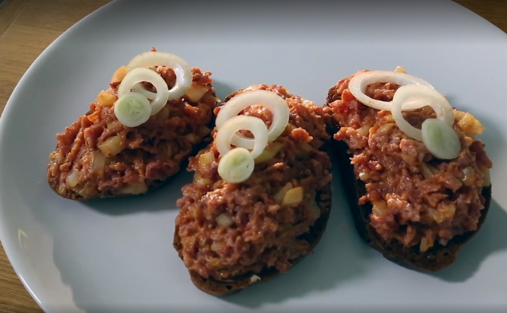

Do you want to eat like a king?

This only needs three ingredients
Salmon, Beef and other tartars are considered luxury foods. But you are poor and can't afford expensive meats, so what will you do? Exactly, have a salami tartar!
Someone might make fun of you, but don't get discouraged, its only food.
Ingedients:
- Cheap salami,
- Bread,
- Onion,
- Ketchup, mustard
- Salt, pepper.
Steps
- Fine grind salami
- Cut bread and fry in a pan on medium heat
- Remove fried bread and rub with garlic
- Cut onion and mix with grinded salami, peper and salt
- Put tartar on bread
Enjoy your meal!